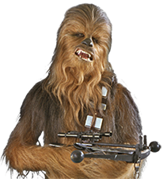

Han Solo est un personnage de Star Wars, joué par Harrison Ford. Né en 29 av. BY sur la planète Corellia, Han Solo est un contrebandier, pilote et ancien élève officier impérial qui dut déserter pour sauver Chewbacca, wookie esclave, pour en faire son copilote.
Dans la saga, le personnage est décrit comme charmeur, courageux, excellent meneur d'hommes, l'homme le plus chanceux de la galaxie mais se montrant souvent cynique et arrogant. C'est le type même du flibustier au grand cœur, ou du cowboy de western-spaghetti qui, malgré son égocentrisme bourru initial, finit par rejoindre la bonne cause. Son nom rappelle celui de Lancelot, Han Solo jouant le rôle du chevalier confirmé dans la saga. Il parcourt la galaxie à bord du Faucon Millenium (Millenium Condor dans la version française de l'épisode IV), qu'il a gagné en pariant contre Lando Calrissian au cours d'une partie de Sabacc, un célèbre jeu de cartes ressemblant à notre poker. Partenaire de Luke Skywalker dans la lutte contre le pouvoir impérial, il tombe amoureux de la sœur jumelle de ce dernier, la princesse Leia Organa. Leur fils Ben, qui a basculé du côté obscur de la Force sous le nom de Kylo Ren et qui est un des leaders du Premier Ordre, l'assassine trente années plus tard dans l'épisode VII. La jeunesse de Han Solo est évoquée dans le film dérivé Solo: A Star Wars Story.
Dans la saga, le personnage est décrit comme charmeur, courageux, excellent meneur d'hommes, l'homme le plus chanceux de la galaxie mais se montrant souvent cynique et arrogant. C'est le type même du flibustier au grand cœur, ou du cowboy de western-spaghetti qui, malgré son égocentrisme bourru initial, finit par rejoindre la bonne cause.
Han Solo semble par certains aspects être sensible à la force et être doué de pouvoirs surnaturels : ainsi, il sait se servir du sabre laser de Luke dans l'Épisode 52, il manie son vaisseau avec l'habileté d'un Jedi, et ce malgré le scepticisme qu'il affiche à l'encontre de la Force et des Jedi lors de sa rencontre avec Obi-Wan Kenobi.
Son meilleur ami se nomme Chewbacca.
Le jeune Han Solo parvient à quitter l'organisation criminelle les Vers Blancs dirigée par Lady Proxima en fuyant sa planète natale, Corellia. 3 ans plus tard, alors qu'il a rejoint les rangs de l'Empire, Han libère le wookiee Chewbacca et déserte avec le petit groupe de contrebandiers de Tobias Beckett. Une opération visant à subtiliser un précieux chargement dans un train conveyex, sur la planète Vandor, échoue à cause de l'intervention du groupe de pirates Cloud-Riders mené par Enfys Nest. Han découvre alors que Tobias, seul survivant de son équipe, travaille pour l'Aube Écarlate, une organisation dirigée par Dryden Vos. Aux côtés de ce dernier, Han a la surprise de retrouver Qi'ra, sa compagne qu'il a dû abandonner sur Corellia. Pour compenser le fiasco sur Vandor, Han, Tobias, Qi'ra et Chewbacca doivent voler une puissante source d'énergie sur Kessel et vite aller la faire stabiliser sur la planète Savareen. Pour cette mission, ils ont besoin du Faucon Millenium, un rapide vaisseau corellien modifié par son propriétaire, le grand joueur de Sabacc, Lando Calrissian. Han met son propre vaisseau en jeu en échange du Faucon Millenium. Mais Lando triche et conserve son Faucon Millenium. Il accepte néanmoins de se joindre au groupe en échange d'une partie des bénéfices. Ils partent ensuite à bord du Faucon Millenium pour la planète Kessel où Han et Qi'ra aident Chewbacca à libérer des Wookiees prisonniers. Ils arrivent à s'échapper, non sans dommages, puisque Lando perd son copilote droïde, L3. Durant le raid de Kessel, ils sont pourchassés par des chasseurs Impériaux, mais grâce au talent de Han, ils parviennent à leur échapper dans un trou noir. Ils atterrissent sur une planète déserte où ils remettent la cargaison convenue à Dryden Vos, mais celui ci se rend compte qu'il a été dupé, et une bagarre éclate. Lando décolle et abandonne ses compagnons. Dryden est tué tandis que Han part s'occuper de Beckett et du chargement de coaxium. Qi'ra restée seule fait apparaître l'hologramme de Maul, qui a survécu aux événements de Star Wars, épisode I : La Menace Fantôme et qui n'est autre maintenant que le véritable chef de l'Aube écarlate. Il alors invite Qi'ra à le rejoindre sur sa planète natale, Dathomir. Elle part donc sous les yeux de Han. Ce dernier rejoint alors Lando et gagne le Faucon durant une autre partie de Sabacc où Lando est empêché de tricher. Han et Chewbacca s'envolent pour Tatooine où on leur a dit qu'une personne importante recherche des contrebandiers. Il s'agit, même si ce n'est pas explicitement dit, de Jabba le Hutt.
Han Solo, contrebandier toujours accompagné de son fidèle Chewbacca, est recruté par le jeune Luke Skywalker et Obi-Wan Kenobi sur Tatooine pour les emmener à Alderaan. Embarquant les deux héros à bord du Faucon Millenium, Han Solo quitte précipitamment Tatooine alors que des stormtroopers prennent d'assaut la piste de décollage du vaisseau. Il fuit par la même occasion le gangster notoire de Tatooine, Jabba le Hutt, à qui il doit une grosse somme d'argent après avoir largué une cargaison d'épice pour éviter de se faire arrêter par la flotte impériale lors d'un arraisonnement survenu quelques semaines plus tôt. Han Solo et ses nouveaux membres d'équipage croisent un champ d'astéroïdes à l'emplacement d'Alderaan, qu'ils reconnaissent comme étant les restes de cette planète, détruite par l'Étoile Noire des impériaux. Par malchance, leur vaisseau est attiré par le rayon tracteur de l'Étoile Noire et Han Solo n'a alors d'autre choix que d'atterrir à l'intérieur et d'être immobilisé. Afin de pouvoir repartir, le vieux Ben Kenobi se propose de désactiver l'attraction magnétique de l'Étoile Noire pendant que Luke Skywalker et Han Solo partent à la rescousse de la princesse Leia Organa, retenue prisonnière dans une cellule. Le vaisseau quitte finalement l'Étoile Noire avec à son bord Han, le jeune Skywalker et la sénatrice rebelle, mais au prix du sacrifice d'Obi-Wan Kenobi qui meurt lors de son duel contre Dark Vador. Arrivé sur Yavin, Han estime avoir rempli sa mission et refuse de collaborer avec les forces rebelles. Il part après avoir empoché son dû. Cependant il revient pour surprendre Dark Vador et ainsi sauver in extremis la vie de Luke Skywalker lors de la bataille de Yavin, ce qui permet à ce dernier de détruire l'Étoile Noire et à Han Solo de prouver qu'il n'est pas qu'un être intéressé par l'argent, mais aussi un homme qui sait s'engager dans un combat pour une juste cause. Dès lors, avec Chewbacca, il embrasse définitivement la cause de l'Alliance rebelle. Il s’éprend alors de la princesse Leia et se lie d'amitié avec Luke.
Sur la planète glacée de Hoth, il sauve de nouveau la vie de Luke Skywalker en partant à sa recherche, seul à travers le blizzard, pour le trouver gelé et épuisé. Il désintègre avec un pistolet laser la balise espion, envoyée sur Hoth par les troupes impériales. Plus tard, dans l'attaque surprise menée par les forces impériales de Dark Vador, il est forcé de prendre la fuite à bord du Faucon Millenium avec la princesse Leia. Il ne peut échapper à la flotte impériale en activant la vitesse-lumière car le système est défectueux. Il est alors contraint de semer les chasseurs à travers un champ d'astéroïdes. Cependant il doit de nouveau affronter la flotte, qui l'avait détecté. Il se pose ingénieusement sur un vaisseau impérial, bernant les ennemis, qui croient que le contrebandier a sauté dans l'hyper-espace. Il se laisse doucement glisser avec les déchets rejetés par les vaisseaux impériaux, avant que ceux-ci ne passent eux aussi en vitesse-lumière pour le poursuivre. Han Solo réussit à trouver asile sur Bespin auprès de son vieil ami Lando Calrissian, alors à la tête de la Cité des Nuages. Cependant, le mercenaire Boba Fett, qui avait compris sa ruse, réussit à le poursuivre incognito. Lando Calrissian est alors contraint de se mettre à la solde de Dark Vador pour éviter l'invasion de sa cité par les forces de l'Empire. Pris au piège, Han Solo est capturé en compagnie de la princesse, de Chewbacca et de C3PO. Il est torturé en présence de Dark Vador et enfin congelé dans de la carbonite, avant d'être remis à Boba Fett qui le livrera à Jabba le Hutt. Avant sa congélation, Leia et Han eurent tout de même le temps de s'avouer mutuellement leur amour.
Han dans son bloc de carbonite, orne, tel un trophée, le palais de Jabba le Hutt quand la princesse Leia déguisée en chasseur de prime vient livrer Chewbacca. Pendant la nuit, elle décongèle Han, mais est prise sur le fait et est à son tour capturée par Jabba le Hutt. Heureusement la venue de Luke Skywalker permet de mettre fin à cette situation. En effet, après que Luke tue le rancor du Hutt, ce dernier condamne le Jedi et ses amis à mourir dévorés par le sarlacc. Mais Luke avait prévu cette issue, et avant qu'il ne saute dans la gueule du Sarlacc, l'un des gardes de Jabba apparait comme étant Lando Calrissian et le droïde intrépide R2-D2 lance au jeune Jedi son sabre laser. Durant cette embuscade, Han, qui commence à peine à retrouver la vue des suites de sa congélation carbonique, envoie sans le vouloir le chasseur de prime Boba Fett droit dans la gueule du Sarlacc et sauve Lando sur le point, lui aussi, de se faire attraper par la créature. Dans l'agitation générale, Jabba le Hutt meurt, étranglé par Leia. Une fois l'équipe à nouveau réunie, il est décidé de ce qui va être l'ultime mission de l'Alliance Rebelle. La destruction de la deuxième Étoile de la mort, alors en construction, près de la lune forestière d'Endor. Pour cela deux corps d'expédition sont dépêchés : le premier, terrestre, mené par le nouvellement promu Général Solo, doit désactiver le bouclier de protection de l'Étoile Noire situé sur Endor dans un bunker sécurisé par les impériaux ; le deuxième, composé de la flotte spatiale rebelle se charge d'attaquer de front l'Étoile Noire. Lando Calrissian se porte volontaire pour l'assaut sur l'Étoile de la mort. Han lui confie, non sans regret, le Faucon Millenium afin de mener sa mission à bien, avant de partir en compagnie de Luke, Leia et Chewbacca pour Endor. Sur Endor, Solo fait la connaissance d'un peuple autochtone, les Ewoks, de petites créatures velues aux allures d'ours en peluche, mais ce qui ne les empêche pas d’être de véritables guerriers pleins de courage. Allié aux Ewoks, Solo réussit à désactiver le bouclier de protection de l'Étoile Noire, et à vaincre les troupes impériales, à coup d'astuce et d'audace. La mission qu'il vient de réussir est capitale car elle permet la destruction de l'arme ultime de l'Empire mais aussi la mort de l'Empereur, alors présent pour superviser la phase finale de la construction de l'Étoile Noire.